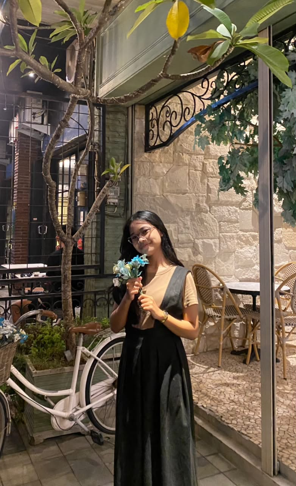
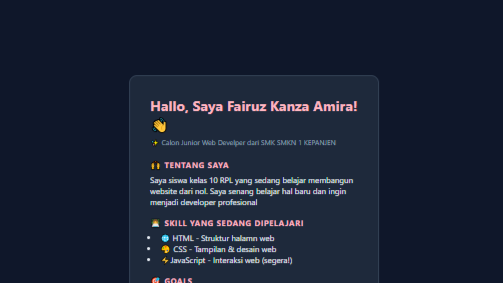
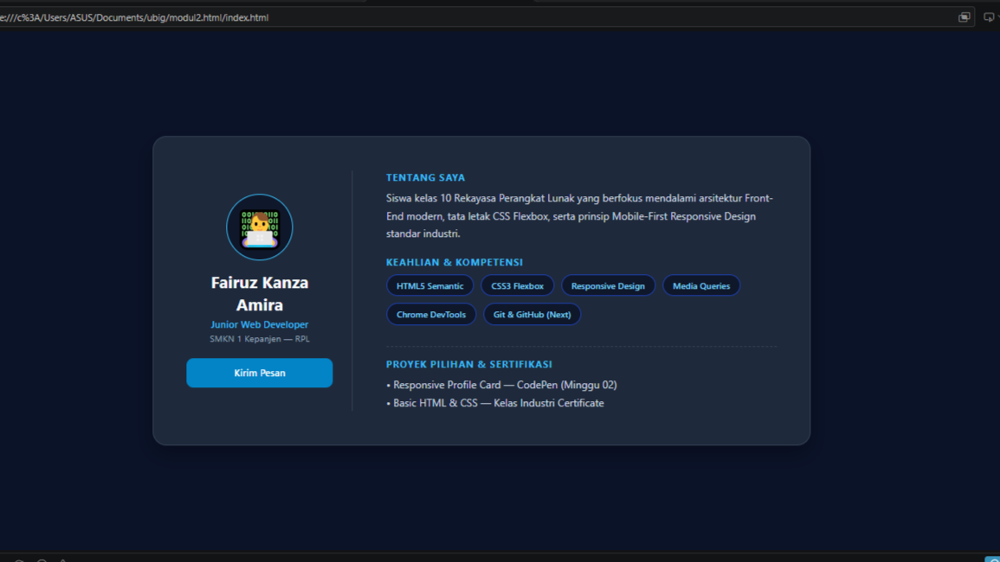
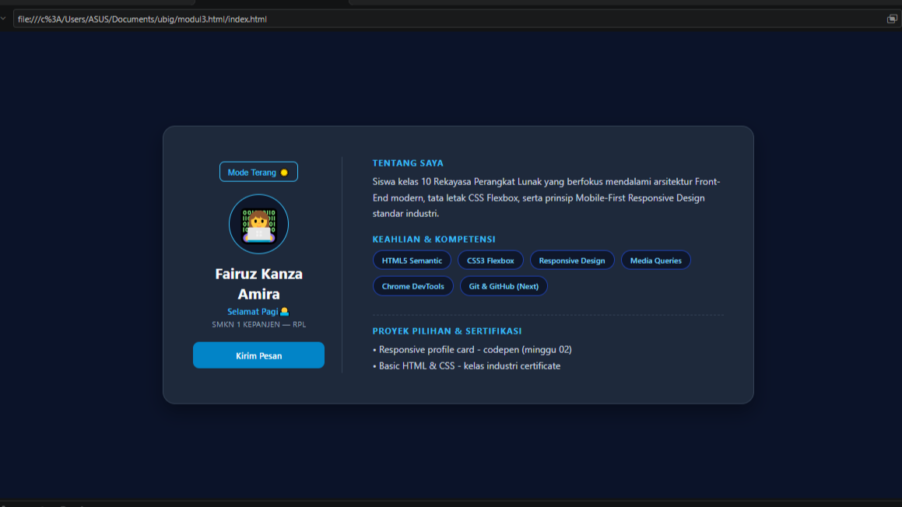

Hallo Semua!
Saya adalah siswa kelas 10 di SMKN 1 Kepanjen jurusan Rekayasa Perangkat Lunak (RPL). Saya memiliki minat besar dalam pengembangan web, khususnya pembuatan antarmuka (front-end) yang estetik, bersih, dan nyaman diakses di berbagai perangkat.

PORTOFOLIO

Portofolio pertama saya, yang dibangun dari nol sembari mempelajari dasar-dasar frontend, struktur HTML, dan penataan gaya dark mode.
Lihat Detail →
Latihan desain web responsif dengan tata letak yang fleksibel, breakpoint desktop, status hover, dan pemeriksaan Lighthouse.
Lihat Detail →
Portofolio interaktif menggunakan event JavaScript untuk penukaran tema, sapaan dinamis, dan avatar yang dianimasikan.
Lihat Detail →KEAHLIAN & ALUR KERJA
Struktur dasar halaman web.
Membuat tampilan web yang menarik dan interaktif.
Menambahkan interaktivitas dan logika pada halaman web.
Mengelola versi kode dan berkolaborasi dalam proyek.
FOKUS UTAMA
Penyusunan tata letak yang rapi, estetis, elegan, dan nyaman dipandang pengguna.
Penerapan efek animasi halus pada elemen antarmuka untuk pengalaman pengguna yang menyenangkan.
PENCAPAIAN
Sertifikasi penyelesaian modul HTML5, CSS3, dan JavaScript interaktif dasar hingga lanjut.
Pemahaman mendalam mengenai penggunaan terminal Git, kolaborasi di GitHub, dan deployment otomatis Vercel.
KONTAK & MEDIA SOSIAL